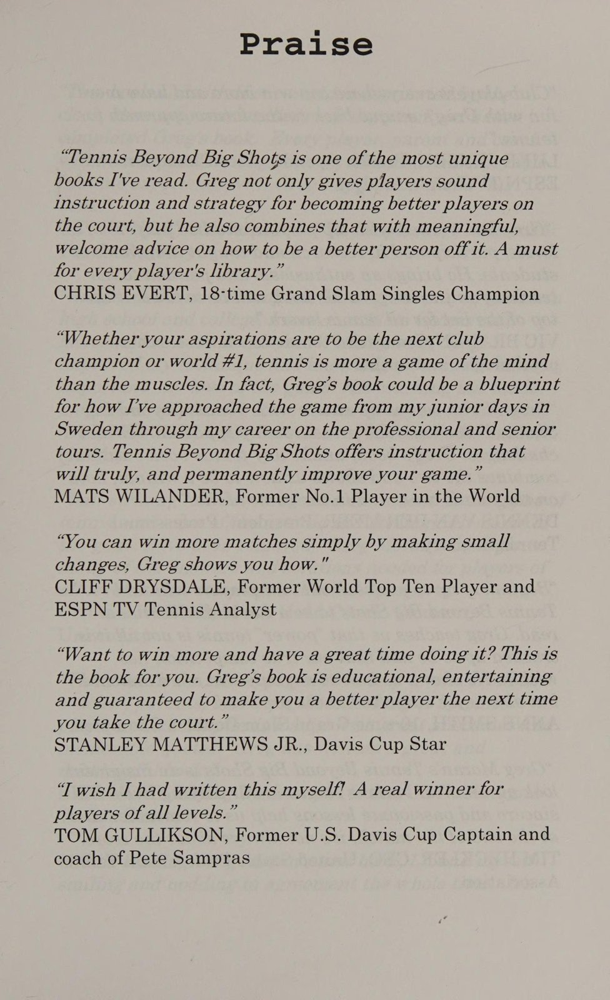
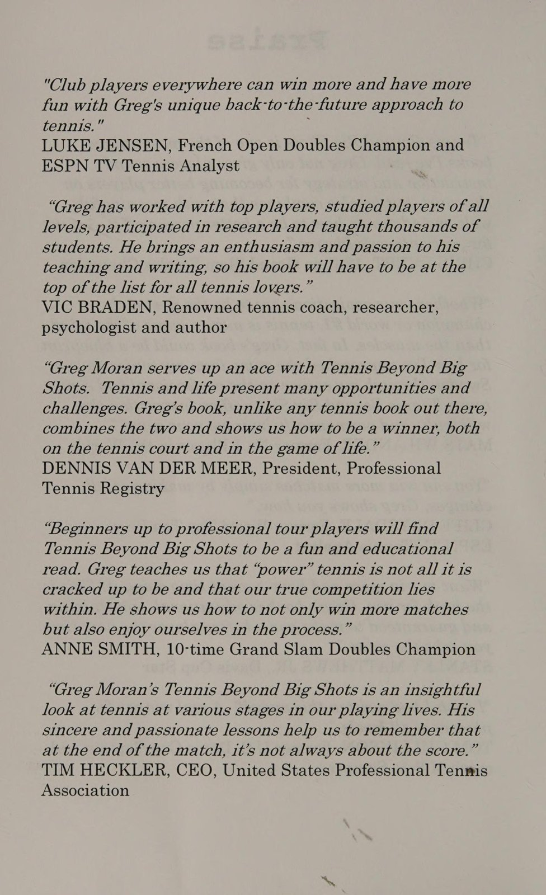
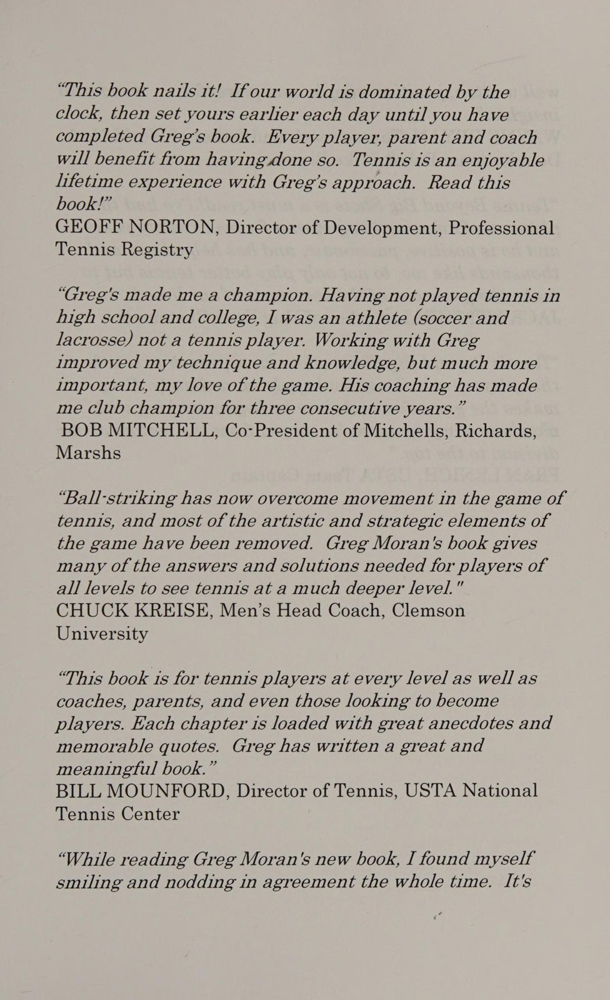
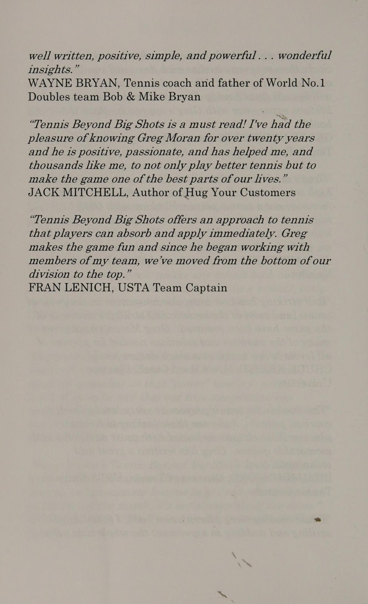
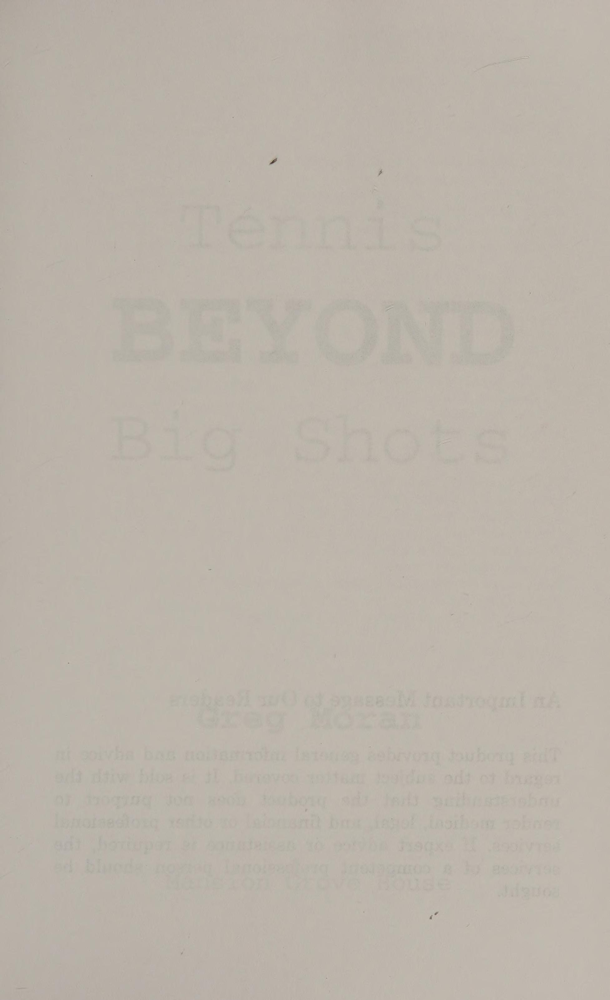
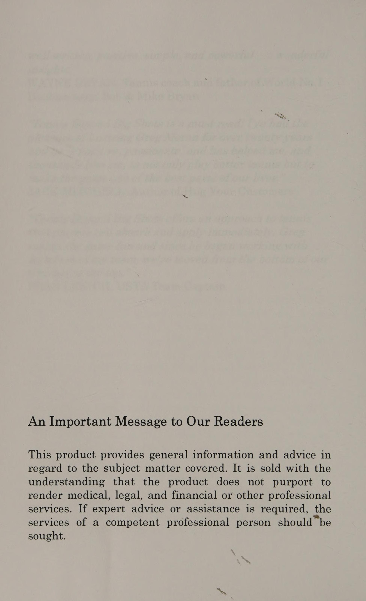
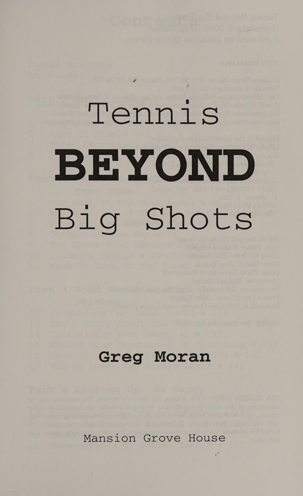

Phần 1: Thay Đổi Nhỏ Tạo Chiến Thắng Lớn: Triết Lý Đơn Giản Hóa & Giải Phóng Bộ Chân
Cuốn sách Tennis Beyond Big Shots của huấn luyện viên Greg Moran là một làn gió tươi mới và thực tế bậc nhất trong làng quần vợt phong trào và bán chuyên. Thay vì cổ súy người chơi nghiệp dư cố gắng bắt chước những cú quất bóng sấm sét không tưởng của các siêu sao trên truyền hình, Greg Moran chỉ ra một sự thật trần trụi: 70% đến 80% điểm số trong quần vợt không được định đoạt bởi những cú đánh ghi điểm ngoạn mục (winners), mà kết thúc bằng những lỗi tự đánh hỏng (unforced errors).
Phần này vạch trần ảo tưởng về những "cú đánh đại bác", hướng dẫn triết lý đơn giản hóa kỹ thuật và giải mã ba bí quyết đánh thức "đôi chân chết" để nâng tầm lối chơi của bạn lên một đẳng cấp hoàn toàn mới.
1. Cú Đánh Đại Bác Chỉ Dành Cho Kẻ Yếu Bóng Vía (Big Shots Are for Wimps)
Tại sao Moran lại đưa ra tuyên bố gây sốc này? Bởi vì những người chơi thiếu tự tin thường chọn cách vung vợt thật mạnh vào quả bóng nhằm kết thúc pha bóng càng nhanh càng tốt, trốn tránh nỗi sợ phải bước vào một cuộc đấu bền bỉ đòi hỏi sự kiên nhẫn và kỷ luật:
- Ảo Tưởng Về Cú Đánh Ghi Điểm Tuyệt Đẹp (The Winner Illusion): Người chơi nghiệp dư thường nhớ mãi một cú đánh dọc dây ghi điểm sấm sét mà quên mất rằng họ đã đánh hỏng 9 quả tương tự trước đó. Hiệu suất thực tế là âm 8 điểm!
- Sức Mạnh Của Tính Nhất Quán (Consistency Over Power): Một tay vợt có khả năng đưa bóng qua lưới an toàn 5 lần liên tiếp với độ sâu hợp lý sẽ đánh bại 90% các đối thủ cùng trình độ chỉ biết đánh mạnh và tự hủy diệt.
- Khái Niệm "Đánh Bóng Thông Minh" (Smart Tennis): Chơi quần vợt không phải là cuộc thi xem ai đập bóng to hơn, mà là nghệ thuật đặt quả bóng vào vị trí khiến đối thủ cảm thấy khó chịu nhất với rủi ro thấp nhất cho bản thân.
2. Đơn Giản Hóa Kỹ Thuật Để Chiến Thắng (Keep It Simple and Win)
Để tăng độ ổn định cho các cú đánh chạm đất, người chơi cần loại bỏ những chuyển động cơ học rườm rà:
- Rút Gọn Động Tác Mở Vợt (Shorten the Backswing): Trong kỷ nguyên bóng nhanh, một vòng vung vợt quá lớn phía sau sẽ khiến bạn luôn tiếp xúc bóng muộn. Hãy chuẩn bị vợt gọn gàng ở tầm ngang hông ngay khi bóng vừa rời vợt đối phương.
- Duy Trì Khoảng Cách An Toàn Qua Lưới (Net Clearance Margin): Đừng bao giờ nhắm bóng cạo sát mép băng trắng trên đỉnh lưới. Hãy luôn nhắm bóng bay cao hơn mép lưới từ 0.5 đến 1 mét. Lưới là chướng ngại vật cố định không bao giờ di chuyển, và việc đánh bóng rúc lưới là món quà miễn phí tệ hại nhất bạn dành tặng đối thủ.
- Điểm Tiếp Xúc Cố Định Phía Trước: Đảm bảo mắt nhìn thấy rõ mặt vợt tiếp xúc bóng ở phía trước hông trước, giữ đầu ổn định và không ngước mắt lên quá sớm để xem bóng bay đi đâu.

3. Ba Bí Mật Tiêu Diệt "Đôi Chân Bốc Mùi / Chân Chết" (Defeating Stinky Feet)
Moran sử dụng thuật ngữ hóm hỉnh "stinky feet" (đôi chân lười biếng / chân chết dính chặt xuống mặt sân) để chỉ nguyên nhân gốc rễ của 90% các cú đánh hỏng:
- Bí Mật 1: Luôn Nhấp Nháy Đầu Ngón Chân (Stay on the Balls of Your Feet): Không bao giờ để gót chân dính bẹp xuống mặt sân. Trọng lượng cơ thể phải luôn chuyển động nhấp nhô nhịp nhàng trên ức bàn chân như một võ sĩ quyền Anh trên võ đài.
- Bí Mật 2: Bước Tách Không Thể Thiếu (The Non-Negotiable Split-Step): Thực hiện cú nhún tách chân ở mọi pha bóng, bất kể bạn đang đứng ở đâu trên sân. Bước tách nạp năng lượng vào các bắp chân, giúp bạn phản ứng ngay trong 0.1 giây đầu tiên.
- Bí Mật 3: Đếm Bước Chân Tiếp Cận (The Dance of Micro-Steps): Thay vì bước 2 bước dài rồi với tay đánh bóng trong thế mất thăng bằng, hãy thực hiện 5 đến 6 bước dậm nhỏ để đưa cơ thể vào vị trí hoàn hảo nhất. Đôi chân càng hoạt động nhiều, đôi tay càng được giải phóng nhẹ nhàng.
Phần 2: Nghệ Thuật Cú Đánh Cổ Điển: Vũ Khí Bí Mật Nâng Tầm Lối Chơi
Trong thời đại mà các video trên mạng xã hội ngập tràn những cú quất bóng xoáy cuộn cực đoan (extreme topspin) đòi hỏi thể lực phi thường, Greg Moran kêu gọi người chơi quay trở về với các cú đánh cổ điển (retro shots). Những cú đánh này không chỉ dễ thực hiện, ít tiêu tốn năng lượng mà còn có tính sát thương cực cao đối với những đối thủ chỉ quen đánh bóng theo một nhịp điệu đơn điệu.
Phần này hướng dẫn cách hóa giải những tay giao bóng sấm sét, khai thác triệt để năm cú đánh mang lại chiến thắng, và nghệ thuật vận dụng cú slice cũng như cú lốp bóng để làm chủ trận đấu.
1. Ai Sợ Người Giao Bóng Sấm Sét? (Who's Afraid of the Big Bad Server?)
Đối đầu với một đối thủ có quả giao bóng một uy lực thường khiến người chơi cảm thấy bất an. Greg Moran chia sẻ chiến thuật biến vũ khí của đối thủ thành gánh nặng của chính họ:
- Không Đánh Trả Bằng Cả Cánh Tay: Đừng cố gắng vung vợt lớn để đánh trả cú giao bóng nhanh. Hãy sử dụng kỹ thuật chặn bóng (block return) hoặc cắt bóng (chip return) với cán cầm Continental. Bạn chỉ cần tận dụng chính tốc độ khủng khiếp của quả bóng và chuyển hướng nó qua lưới.
- Trả Bóng Sâu Vào Giữa Sân (Deep Down the Middle): Thay vì mạo hiểm trả bóng sát vạch biên, hãy đưa bóng sâu vào khu vực giữa sân đối phương. Vị trí này làm tê liệt hoàn toàn góc tấn công tiếp theo của người giao bóng và buộc họ phải tự lùi lại tránh bóng.
- Tấn Công Vào Quả Giao Bóng Hai: Tiến thẳng vào trong sân 2 bước khi đối thủ chuẩn bị giao bóng hai. Áp lực hiện diện của bạn sẽ khiến họ hoang mang và dễ phạm lỗi giao bóng kép (double fault).

2. Năm Cú Đánh Mang Lại Chiến Thắng (Five Strokes and You Win)
Bạn không cần sở hữu 20 kỹ thuật phức tạp để trở thành một tay vợt cừ khôi. Moran đúc kết năm cú đánh cốt lõi tạo nên 95% thành công trên sân:
1. Quả Giao Bóng Hai Có Độ Xoáy Đáng Tin Cậy: Đảm bảo bóng luôn vào sân dưới bất kỳ áp lực nào.
2. Cú Trả Giao Bóng Sâu & An Toàn: Đưa bóng vào cuộc và triệt tiêu lợi thế giao bóng của đối phương.
3. Cú Đánh Chéo Sân Sâu Qua Lưới Cao: Giữ bóng sâu ở góc sân đối thủ với biên độ an toàn tuyệt đối.
4. Cú Lốp Bóng Giải Nguy Đỉnh Cao (The Defensive Lob): Cứu thua khi bị ép góc và đảo ngược thế trận.
5. Cú Bắt Lưới Chặn Góc Đơn Giản: Kết liễu điểm số nhẹ nhàng khi đối thủ đánh bóng yếu.

3. Trúng Số Trên Lưới & Hai Cú Đánh Đáng Kính Trọng (Retro Mastery)

Nghệ thuật điều khiển nhịp độ nằm ở việc làm chủ hai cú đánh thường bị đánh giá thấp nhất trong quần vợt hiện đại:
- Sự Lợi Hại Của Cú Cắt Slice (The Underestimated Slice): Cú cắt bóng trái tay là chiếc mỏ neo của sự ổn định. Quả bóng bay lượn sát lưới và chuồi thấp khiến các tay vợt cầm vợt kiểu Western hoặc Semi-Western phải khom lưng cúi gập người, phá vỡ hoàn toàn thế đứng thoải mái của họ.
- Cú Lốp Bóng (The King of Defense): Khi đối phương tràn lên lưới với vẻ đe dọa, đừng vội vã tìm góc passing shot hẹp. Một cú lốp bóng cầu vồng cao vút qua đầu sẽ buộc đối thủ phải quay lưng chạy trối chết về cuối sân, trao lại quyền kiểm soát trận đấu vào tay bạn.
- Khi Nào Mới Nên Tung Ra Cú Đánh Uy Lực? (When to Turn on the Power): Moran chỉ rõ ba điều kiện vàng: Chỉ tung toàn lực khi bạn đã bước chân vào bên trong vạch cuối sân, quả bóng nảy lên ngang tầm ngực hoặc thắt lưng thoải mái, và đối thủ đang ở vị trí mất thăng bằng ngoài sân. Nếu thiếu bất kỳ điều kiện nào trong ba điều kiện trên, hãy tiếp tục duy trì đường bóng an toàn.
Phần 3: Tư Duy Sắc Bén Đánh Bại Đòn Đánh Đẹp: Chiến Thuật & Làm Chủ Tâm Trí
Một câu châm ngôn kinh điển của Greg Moran là: "Quần vợt là một ván cờ vận động ở tốc độ 100 dặm một giờ." Bạn có thể sở hữu những cú đánh đẹp mắt như tranh vẽ, nhưng nếu bạn đưa ra những quyết định chiến thuật sai lầm và để cảm xúc tiêu cực xâm chiếm tâm trí, bạn sẽ luôn là người chiến bại trước những đối thủ có lối chơi mộc mạc nhưng tư duy sắc sảo.
Phần này hướng dẫn phương pháp chế ngự những con quỷ tâm lý bên trong, làm chủ các nguyên lý hình học sân đấu xác suất cao và cách đọc vị điểm yếu của đối thủ để giành chiến thắng một cách thông minh.
1. Chinh Phục Con Quỷ Tâm Lý Bên Trong (Conquering Inner Demons)
Đối thủ lớn nhất mà bạn phải đối mặt trên sân quần vợt không phải là người đứng ở bên kia lưới, mà là chính tiếng nói phán xét bên trong đầu bạn:
- Con Quỷ Của Sự Thiếu Kiên Nhẫn (The Impatience Demon): Sau khi đôi công 3 đến 4 đường bóng qua lại, tiếng nói này thúc giục bạn: "Hãy quất thật mạnh để kết liễu điểm số đi!" Bạn vung vợt trong thế chưa sẵn sàng và bóng bay thẳng ra ngoài hàng rào. Hãy học cách chấp nhận rằng mỗi pha bóng là một cuộc thử thách lòng kiên nhẫn.
- Con Quỷ Của Nỗi Sợ Mắc Lỗi: Khi dẫn trước 40-15 hoặc 5-4, nỗi sợ hãi bắt đầu khiến cánh tay bạn co cứng lại. Bạn rón rén đẩy bóng sang và trở thành con mồi dễ dàng cho đối thủ. Bí quyết ở đây là: Hãy tiếp tục thực hiện đầy đủ động tác vung vợt với sự tự tin thanh thoát, chỉ điều chỉnh điểm rơi vào vùng an toàn hơn.
- Quy Tắc Xóa Bỏ Điểm Cũ Trong 3 Giây: Sau một pha đánh hỏng ngớ ngẩn, bạn chỉ có đúng 3 giây để tiếc nuối. Sau 3 giây, hãy hít một hơi sâu và xem pha bóng đó như thể nó đã diễn ra từ ngày hôm qua.

2. Hình Học Sân Đấu & Quần Vợt Xác Suất Cao (Percentage Tennis Geometry)
Greg Moran chứng minh rằng sân quần vợt được thiết kế với những quy luật hình học mà người chơi thông minh bắt buộc phải nắm rõ:
1. Độ Cao Của Lưới: Lưới ở giữa sân có chiều cao 0.914 mét (3 feet), trong khi lưới ở hai cột biên cao tới 1.07 mét (3.5 feet). Đánh bóng qua giữa sân luôn cho bạn thêm 15 cm độ cao an toàn.
2. Chiều Dài Sân Đấu: Đường chéo sân dài hơn đường thẳng dọc dây gần 2 mét (khoảng 25 mét so với 23.77 mét). Đánh chéo sân cho phép bạn đánh bóng mạnh hơn và sâu hơn mà bóng vẫn không bị bay ra ngoài vạch cuối sân.
- Quy Tắc Vàng Đánh Chéo Sân: Khi bạn bị đối thủ ép sâu ra góc sân, cú đánh hợp lý duy nhất theo xác suất là đánh trả bóng chéo sân cao qua lưới. Cố gắng tung cú passing shot dọc dây từ vị trí này là một hành động tự sát về mặt chiến thuật.
- Nhắm Vào Các Vùng An Toàn (Aim for the Big Targets): Đừng bao giờ nhắm vào vạch sơn trắng rộng 5 cm. Hãy nhắm vào vùng sân cách mép vạch biên và vạch đáy sân 1 mét. Biên độ sai số này sẽ biến các cú đánh lỗi nhẹ của bạn thành những đường bóng hiểm hóc thay vì tự đánh bóng ra ngoài.

3. Đọc Vị & Bẻ Gãy Tâm Lý Đối Thủ (Reading the Opponent)
Một đấu thủ thông minh luôn quan sát đối phương như một nhà tâm lý học thực địa:
- Nhận Diện Điểm Yếu Thể Lực: Nếu đối thủ thở dốc sau một pha bóng dài hoặc liên tục chống tay vào đầu gối, hãy kéo dài các pha bóng tiếp theo bằng những quả lốp cao sâu và ép họ phải di chuyển ngang sân liên tục.
- Nhận Diện Trạng Thái Mất Bình Tĩnh: Khi đối thủ bắt đầu lẩm bẩm chửi thề, đập vợt hoặc nhìn sang người thân phàn nàn, họ đang ở trên bờ vực sụp đổ tâm lý. Việc của bạn lúc này là giữ khuôn mặt lạnh lùng như băng và đưa bóng vào sân đều đặn để họ tự đánh hỏng.
Phần 4: Chơi Quần Vợt Đỉnh Cao Trọn Đời & Ý Nghĩa Vượt Lên Bảng Điểm Số
Quần vợt thường được ca ngợi là "môn thể thao của cả đời người" (the sport for a lifetime). Bạn có thể cầm vợt từ khi 6 tuổi và vẫn có thể thi đấu hăng say trên sân khi đã bước sang tuổi 75 hoặc 80. Trong chương kết của tác phẩm, Greg Moran nhắc nhở chúng ta về lý do nguyên sơ khiến chúng ta yêu thích môn thể thao này: Đó không phải là để giành được những chiếc cúp phủ bụi trên kệ, mà là niềm vui thuần khiết của sự vận động, tình bạn tri kỷ và hành trình hoàn thiện nhân cách bản thân.
Phần kết này chia sẻ các bí quyết duy trì phong độ đỉnh cao qua từng độ tuổi, lời khuyên chân thành dành cho phụ huynh quần vợt và hệ thống thống kê lỗi tự đánh hỏng để đo lường sự tiến bộ thực sự.
1. Bí Quyết Chơi Hay Nhất Suốt Đời (Play Your Best Forever)
Khi tuổi tác tăng lên, tốc độ bứt tốc và thể lực có thể suy giảm tự nhiên, nhưng trí tuệ chiến thuật và cảm giác bóng lại ngày càng sắc bén hơn:
- Chuyển Dịch Sang Lối Chơi Tiết Kiệm Năng Lượng: Thay vì cố gắng chạy đuổi theo mọi đường bóng vô vọng, hãy học cách đoán trước hướng đánh của đối thủ thông qua góc mở vai và mặt vợt của họ. Bước di chuyển sớm 1 nhịp sẽ bù đắp hoàn hảo cho sự suy giảm tốc độ cơ học.
- Làm Chủ Nghệ Thuật Cắt Bóng & Đổi Hướng: Sử dụng các cú cắt slice thấp và bóng lốp sâu để kiểm soát trận đấu mà không làm tổn hại đến các khớp vai và khuỷu tay.
- Bảo Vệ Cơ Xương Khớp Chủ Động: Lựa chọn mặt sân thân thiện hơn (sân đất nện hoặc sân cỏ nhân tạo thay vì sân bê tông cứng), sử dụng cây vợt có độ cứng vừa phải và dây cước mềm mại (multifilament hoặc natural gut) để triệt tiêu các chấn động có hại lên cánh tay.
2. Trở Thành Phụ Huynh Quần Vợt Tuyệt Vời Nhất (Being the Best Tennis Parent)
Greg Moran dành một chương tâm huyết gửi gắm đến các bậc cha mẹ có con em theo đuổi quần vợt:
- Làm Tấm Gương Về Tinh Thần Thể Thao: Hãy vỗ tay khen ngợi cả những cú đánh đẹp mắt của đối thủ của con bạn. Thái độ lịch thiệp và điềm đạm của cha mẹ trên khán đài là bài học nhân cách lớn nhất mà đứa trẻ tiếp nhận.
- Khuyến Khích Tinh Thần Tự Lập: Hãy để con tự mang túi vợt, tự khởi động và tự giải quyết các tình huống tranh cãi điểm số trên sân. Quần vợt là phòng thí nghiệm tuyệt vời nhất để rèn luyện sự tự chủ cho một con người.

3. Vượt Lên Trên Bảng Điểm Số (Beyond the Score)
Chiến thắng lớn nhất trong quần vợt là chiến thắng vượt lên trên giới hạn của chính bản thân mình:
- Hệ Thống Thống Kê Lỗi Tự Đánh Hỏng (The Unforced Error Chart): Moran khuyến nghị người chơi theo dõi trận đấu không phải qua điểm số thắng thua, mà qua tỷ lệ lỗi tự đánh hỏng. Nếu bạn giảm được số lỗi tự đánh hỏng từ 30 lỗi xuống còn 15 lỗi trong một trận đấu, bạn đã tiến bộ vượt bậc bất kể tỷ số chung cuộc ra sao.
- Thang Đo Trình Độ USTA NTRP: Cuốn sách cung cấp bảng phân cấp trình độ chính xác từ 1.5 (người mới bắt đầu) đến 7.0 (vận động viên chuyên nghiệp thế giới), giúp người chơi định vị chính xác vị trí của mình và đặt ra lộ trình rèn luyện thực tế.
- Ý Nghĩa Sau Cùng Của Trận Đấu: Khi bước ra khỏi cánh cổng sân quần vợt, điều đọng lại sâu sắc nhất là mồ hôi sảng khoái, trái tim khỏe mạnh và nụ cười rạng rỡ của những người bạn cùng chia sẻ niềm đam mê với trái bóng nỉ.